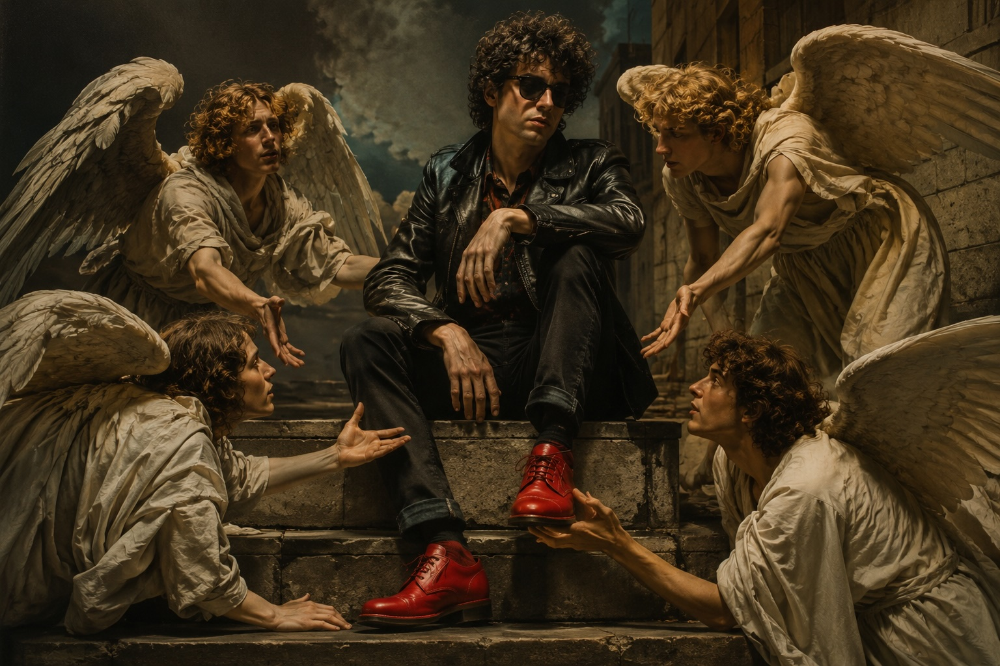

Re Styles und Fee Waybill von "The Tubes"
Der Sommer 1978
Wir wohnten seit zwei Jahren in Heuchelheim. Der Club 88 war so etwas wie ein Anlaufpunkt für Partyfans geworden. Menschen kamen nachts mit uns nach Hause, feierten mit uns, blieben hängen und verschwanden wieder. Manche wurden sogar Freunde.
Hilde und ich waren bereits ein Paar. Resi war mit Martin zusammen, einem Freiburger aus meinem Semester. Martin gehörte zunächst nicht zu meinem engeren Freundeskreis. Aber er war einer von denen, die abends übrig blieben. Das war für mich ein Qualitätsmerkmal. Wenn gegen Mitternacht die ersten nach Hause gingen, blieben meistens die interessanteren Leute übrig. Und irgendwann landeten alle gemeinsam im Harlem oder später im Club 88. Mit Martin und seinen Freunden lernten wir einen neuen Freundeskreis kennen. Leute auf unserer Wellenlänge. Partyanimals, die mehr draufhatten als feiern. Menschen, auf die man sich verlassen konnte. Keine Lemminge und stromlinienförmigen Mitläufer.
1978 war überhaupt ein gutes Jahr. Es gab keine harten Prüfungen. Das Leben spielte sich morgens im Hörsaal, mittags am Heuchelheimer See und abends in den Kneipen ab. So in etwa.

Musik war ein Riesenthema. Es war diese spannende Übergangszeit, in der es noch den klassischen Rock gab, aber gleichzeitig etwas Neues entstand. Dire Straits tauchten auf, Patti Smith, Talking Heads. Im Club 88 lief Peter Framptons Frampton Comes Alive bis zum Anschlag. Wenn heute irgendwo noch „Show Me The Way“ läuft, denke ich sofort an diese Zeit. Mein persönlicher Held war Springsteen. Martin und ich hatten dagegen noch einen gemeinsamen Favoriten: Elvis Costello. Sein Album lief ständig. Und ganz besonders ein Lied:
The Angels Wanna Wear My Red Shoes.
Wie oft wir das gehört haben, weiß ich nicht mehr. Wir liebten die Melodie und den Text, der auf amüsante Weise mit den Themen Leben und Tod umging. Wir waren die Engel mit den roten Schuhen, die noch lebten. Und wie!
Natürlich fuhren wir auch auf Konzerte. Graham Parker and the Rumour spielten im Frühsommer in den Sartorysälen in Frankfurt. Hilde wohnte in Frankfurt. Dort trafen wir uns mit Resi und Martin. Erstmal vorglühen und dann ab auf die Piste! Bei Konzerten ohne feste Plätze standen wir grundsätzlich vorne. Wenn wir anfangs nicht vorne standen, arbeiteten wir uns eben nach vorne durch. Irgendwie schafften wir es fast immer bis direkt vor die Bühne. Und dann ging die Post ab! Wir tanzten wie die Wilden. Graham Parker war nicht viel besser als wir!
Noch besser erinnere ich mich an "The Tubes" in Offenbach. Die waren damals zum ersten Mal in Deutschland unterwegs. Uschis damaliger Freund Jerry besaß einen Kleinbus. Also quetschten wir uns zu siebt oder acht hinein und fuhren los. Wir hatten uns verkleidet und angemalt – wie die Band. Und unterwegs wurde natürlich vorgeglüht. Die Tubes-Show war völlig abgedreht- der Zeit weit voraus. Ein Spektakel, wo zeitweise an die zwanzig Leute Musik machten und Theater dazu spielten. Der Höhepunkt: Fee Waybill und Re Styles auf einem Motorrad, als sie das Duett „Don't Touch Me There“ sangen. Ein wunderbar satirischer Text, den wir auswendig kannten. Wir standen vorne - wie immer - und sangen mit.
Der Sommer 1978 hatte einfach alles. Die WG lief hervorragend. Hilde war da. Martin und seine Leute waren da. Ständig war irgendetwas los. Bei Rolf und bei uns. Wir fuhren auf Konzerte, hingen nachts in Kneipen ab, diskutierte Müll und Weltpolitik. So konnte es weitergehen. Zumindest bis zum Herbst.
Wenn ich heute an diesen Sommer denke, höre ich zuerst die Musik. Und ziemlich weit vorne läuft Elvis Costello.
The Angels Wanna Wear My Red Shoes.